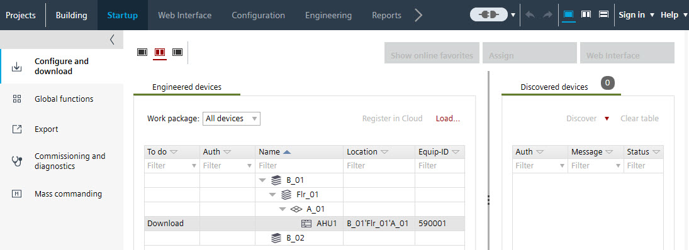
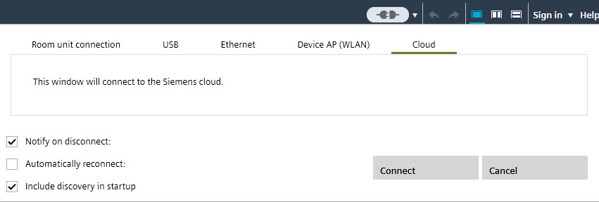
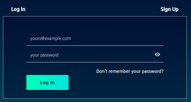
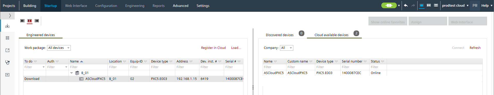
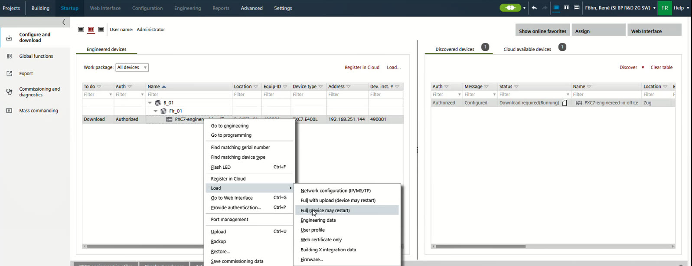

通过云端加载设备
Connecting to the Cloud from office
- The Ethernet connection is disconnected.
- The Cloud Link
 is operating.
is operating. - The device on the customer site is connected to the Internet.
- Go to Startup.
- Open the Configure and download task.
- In the Engineered devices tab, select the device.

- Select the arrow symbol to the right of Connect
 .
. - The Connection settings dialog box opens.
- Select the Cloud tab.

- Select Connect.
- The Cloud Log In dialog box opens.

- Enter your personal log-in data.
- Establishing a connection to the cloud takes a certain amount of time.
- After connecting to the Cloud, the device is visible in the Discovered devices and Devices in the Cloud tabs.

Loading device data from office
- The discovered device is visible in the Discovered devices tab.
- Select the device in the Engineered devices tab.
- Right-click and select Load > Network configuration (IP/MS/TP).
- Right-click and select Load > Full (device may restart).
- (Optional) Right-click and select Load > Engineering data.
- (Optional) Right-click and select Load > Building X integration data.
Note: Those data are used for the Building X Operation manager.
- The device data are loaded and ready for commissioning or Building X engineering.
